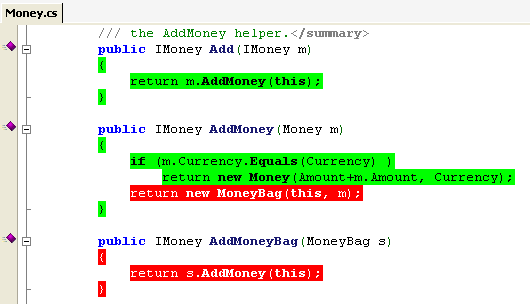

firat atagun
In computer programming, unit testing is a software testing method by which individual units of source code, sets of one or more computer program modules together with associated control data, usage procedures, and operating procedures, are tested to determine whether they are fit for use. Wikipedia
Unit testing is breaking your software into pieces, and verifying their behaviour in isolation.
Software that can be tested in isolation, verifiable, deterministic and proved to be working properly at all times.
Testable code increases cohesion and loose coupling while making software maintenance easier.
Testable software and associated tests reduces bugs in development and maintenance
Testing helps reduce effort and time of developing and maintaining our software.
Fact: mainintaining software takes much more time and effort than developing it.
Even though there is time and effort cost associated to creating tests, they pay of in the long time and increase trust to the software.
Unit Testing your code helps improve the design of our software.
Unit Testing can help educate developers. It can be considered as documentation.
If a developer wants to learn about a software, reading tests can help as much as reading documentation.
Unit Testing increases the trust and confidence in our software.
Building blocks of software in isolation. Can be thought of context or bounded context
New is a glue. It introduces a tight coupled dependency to your software.
Use interfaces define your contract and hide implementation details from your clients.
How about DateTime?
Constructors shouldn't contain any logic. Constructors should be as simple as possible.
There are injectables and newables. Injectables are like services that implements an interface. Newables usually represents entity. Injectables can accept other injectables but shouldn't accept newables. Newables can accept other newables but shouldn't accept any injectables.
if you see a repeating pattern of same conditionals you can extract it into polymorphic constructs. Break complex classes to smaller simpler classes.
Talk to your friends. Don't talk to strangers.
var customer = _customerService.GetCustomer(id);
var userName = Environment.GetSecurity().GetLogin.GetUser().UserName;Except Builder pattern this is a bad practice because it violates the law of demeter and makes testing harder.
Short, Clean and concise
100s lines of unit test code is not good. Asserting too many expectation in a single test likely to fail.
Seperate tests increases readibility and precision. Test one expectation at a time.
Expectation and assumptions
Expectation and assumptions from dependencies should be realistic.
Readibility
Unit tests should read like business rules.
Corporate_Account_Transfer_Succeeds.
Unit tests should be easy to maintain.
Unit tests should provide trust and confidence on your software.
Arrange the subject under test.
Act in isolation
Assert the expectation.
Gives you confidence over how much code has been tested.

Well, I am panicked. How much should I cover?